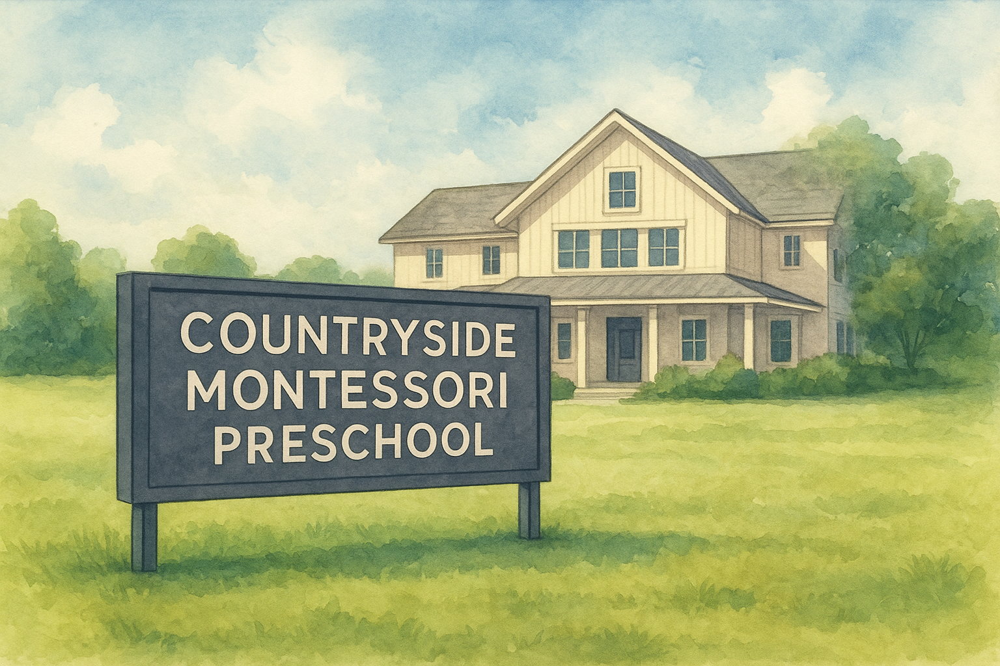

Help us raise $15,000 by November 15th to beautify the school entrance
Our goal is to transform the front entrance of Countryside Montessori Preschool. The current space does not reflect the warmth and care that the school provides.
This project includes removing outdated boulders and overgrowth, reseeding, and building a beautiful brick enclosure around the main sign on Northport Drive. Solar lighting will keep future maintenance costs low while enhancing the space for years to come.
We're aiming to raise $15,000 by November 15th.
$100 raised of $15,000 goal
Or make checks out to Countryside Montessori.
Please write "landscaping project" in the notes.
Questions? Contact Caroline at:
608-852-4461
caroline.casson1992@gmail.com